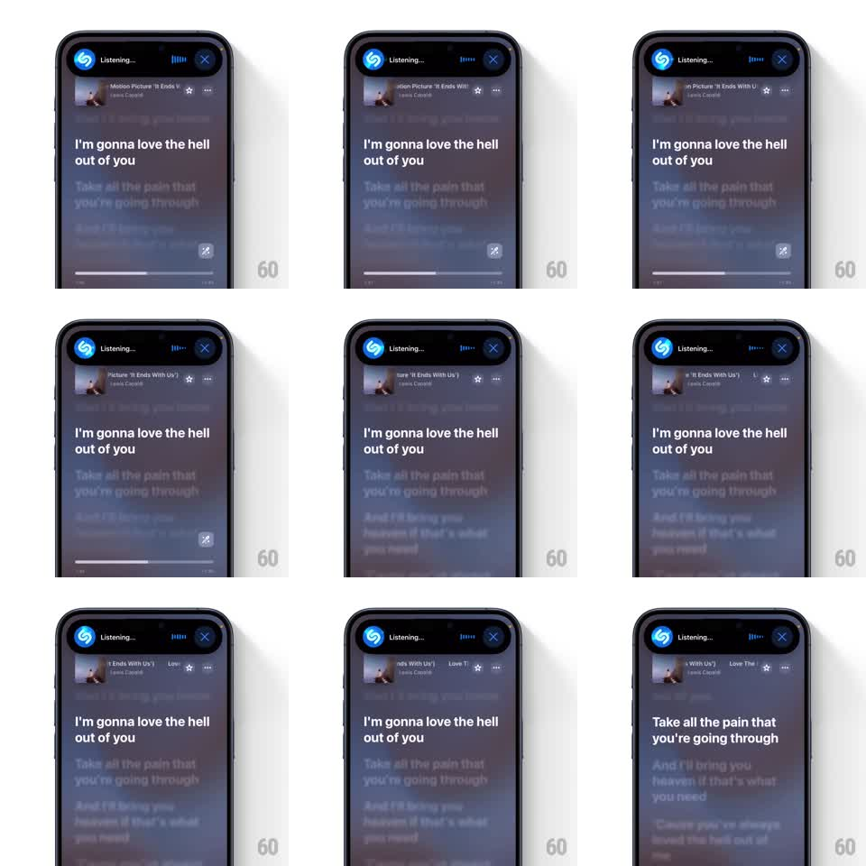

Media
Frame-by-frame

Rebuild this interaction 1:1: Shazam's Dynamic Island listening state - an expanded Island with a pulsing Shazam logo, live blue audio visualizer bars, and a close button, persisting over a now-playing screen with synced lyrics and a scrolling track ticker.

Rebuild this interaction 1:1: Shazam's Dynamic Island listening state - an expanded Island with a pulsing Shazam logo, live blue audio visualizer bars, and a close button, persisting over a now-playing screen with synced lyrics and a scrolling track ticker. ## Integration Integration: stack-agnostic spec - springs given as stiffness/damping, timed motions as duration + curve; map every value to your framework and animation library of choice. ## Scene The expanded Dynamic Island: black pill with the Shazam logo left, "Listening..." label, blue visualizer bars, and an X right. Behind it: a now-playing view - artwork header row (thumbnail, track title, artist, star, overflow) that scrolls horizontally like a ticker when the title overflows, and large synced lyrics where the current line is bright and upcoming lines dim. ## Motion spec Pattern: persistent live-activity island with pulsing logo and visualizer. - The Island expands from the notch (spring stiffness ~300, damping ~25) when listening starts and stays pinned over any content. - The Shazam logo pulses with a soft ring (scale 1.0 to 1.12 + halo fade, 1.2s loop). - Visualizer bars dance continuously: 4-5 blue bars animating heights on independent sine phases (~600ms cycles) - never synchronized, never still. - The track row ticker: overflowing title scrolls left in a seamless loop (linear, ~4s per pass, brief pause at each end). - Lyrics advance with the song: the active line crossfades to full brightness and scales up slightly (1.0 from 0.97, 300ms) as the previous line dims to ~40%. - Tap X: the Island collapses back to the compact notch pill (spring ~350/28). ## Calibration - Visualizer animation is amplitude, not position - bars grow from their baseline. - The Island is live the whole time; it must never freeze when the underlying view scrolls. ## Reduced motion Logo holds static; visualizer shows a fixed mid-level bar pattern. ## Don't miss - The Island's black is true black, blending into the notch hardware. - Lyric highlight tracks the vocal line timing, not an even interval.